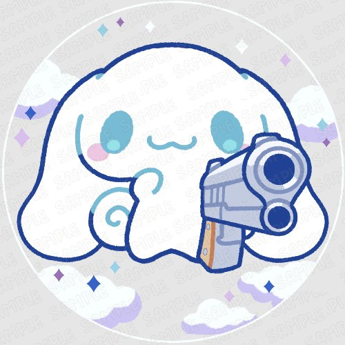

Whack-A-Mole Game Instructions

Objective:
Whack-A-Mole is a fast-paced game where your goal is to whack as many moles as you can within the given time limit. Keep your reflexes sharp and aim for high scores!
Getting Started:
- Choose your preferred game speed by selecting one of the radio buttons (Slow, Medium, Fast)
- Launch the game by clicking the "Play" button
Gameplay:
- Once the game starts, moles will randomly appear from the holes on the screen
- Use your mouse to whack the moles as soon as they appear
- Keep an eye on the countdown timer at the top of the screen. The game ends when the timer reaches zero
Scoring:
- Each successful whack earns you points based on your current score multiplier
- The score multiplier increases with higher game speeds, encouraging faster gameplay
Game Over:
- When the countdown timer reaches zero, the game ends.
- Your final score will be displayed on the screen.
- Click the "Restart" button to play again and aim for a higher score!
Memory Cards Game Instructions

Objective:
Memory Matching is a game where your objective is to match pairs of cards with identical images. Test your memory skills by flipping over cards and finding all the matching pairs!
Getting Started:
- Choose your preferred difficulty level by selecting one of the options (Easy, Medium, Hard)
- Click the "Play" button to start the game
Gameplay:
- Once the game starts, cards with hidden images will be displayed on the screen
- Click on any card to reveal its image
- If the images on two revealed cards match, they will remain face-up
- If the images do not match, the cards will be flipped face-down again
- Your goal is to find all the matching pairs before the game ends
Scoring:
- Each successful match earns you points
- However, points will be deducted for unsuccessful attempts
- Aim to find all the matching pairs with the highest score!
Game Over:
- The game ends when you successfully match all the pairs or run out of time
- Your final score will be displayed on the screen
- Click the "Restart" button to play again and improve your score!
Dino Runner Game Instructions

Objective:
Dino Runner is a game where you control a cute dinosaur as it jumps over obstacles to survive for as long as possible. Test your agility in this fun-filled adventure!
Getting Started:
- Click the "Play" button to start the game
- Press the spacebar key to make the dinosaur jump over obstacles
Gameplay:
- Once the game starts, the dinosaur will automatically begin running
- Obstacles in the form of cacti will appear on the screen
- Press the spacebar key at the right moment to make the dinosaur jump over the cacti
- Avoid colliding with the cacti to keep the dinosaur running
- Your goal is to survive for as long as possible and achieve the longest time!
Scoring:
- Your score increases with each second the dinosaur survives
- The longer the dinosaur runs without colliding with obstacles, the higher your score
- Aim for a new high score with each playthrough!
Game Over:
- The game ends when the dinosaur collides with an obstacle
- Your survival time will be displayed on the screen
- Click the "Restart" button to play again and challenge yourself to beat your previous record!